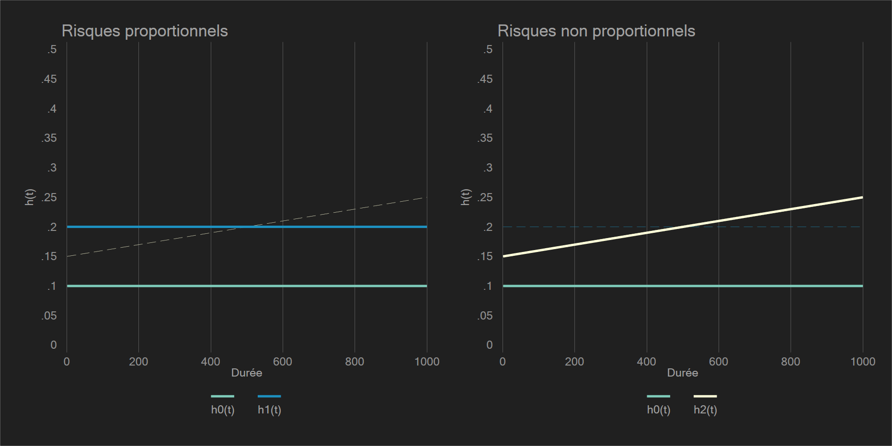

Introduction
Proprortionnalité des risques
La spécification usuelle est:
\[h(t)=h_0(t)\times e^{X^{'}b}\]
\(h(t)\) est une fonction de risque.
\(h_0(t)\) est une fonction qui dépend du temps mais pas des caractéristiques individuelles. Il définiera le risque de base (baseline).
\(e^{X^{'}b}\) est une fonction qui ne dépend pas du temps, mais des caractéristiques individuelles \(X^{'}b=\sum_{k=1}^{p}b_kX_k\). La forme exponentielle assurera la positivité du risque.
Le risque de base
- \(h(t)=h_0(t)\) donc \(e^{X^{'}b}=1\)
- Observations pour lesquelles \(X=0\)
Risques proportionnels
Cette hypothèse stipule l’invariance dans le temps du “rapport des risques” (hazard ratio).
Une seule covariable \(X\) est introduite, et soit 2 individus \(A\) et \(B\): \(h_A(t)=h_0(t)e^{bX_{A}}\) et \(h_B(t)=h_0(t)e^{bX_{B}}\).
Les rapport des risques entre \(A\) et \(B\) est égal à:
\[\frac{h_A(t)}{h_B(t)}= \frac{e^{bX_A}}{e^{bX_B}}=e^{b(X_A-X_B)}\]
Pour une caractéristique binaire: \(X_A=1\) et \(X_B=0\): \(\frac{h_A(t)}{h_B(t)}=e^b\).
Autrement dit, la proportionalité des risques va traduire l’absence d’une interaction significative entres les rapports de risques estimés et la durée (ou une fonction de celle-ci).
Illustration graphique

On part d’un modèle à risque constant avec \(h_0(t)=0.1\).
Comme \(h_1(t)=0.2\) quel que soit \(t\), le rapport des risques est toujours égal à \(\frac{0.2}{0.1}=2=e^{b}\). Le coefficient estimé est égal à \(log(2)=0.69\).
Pour \(h_{1b}(t)\), le rapport de risques augmente avec le temps: \(t=1\), \(h_{1b}(1)=0.15\) et \(h_{1b}(1000)=0.25\) l’hypothèse de proportionalité n’est donc pas respectée.
Les modèles
Modèle semi-paramétrique de Cox
Le modèle estime directement les \(b\) indépendement de \(h_0(t)\), c’est pour cela qu’il est semi-paramétrique. Les rapports de risque (\(e^{b}\)) seront utilisés pour estimer la baseline \(h_0(t)\), qui peut s’avérer nécessaire pour calculer des fonctions de survie ajustées. Le respect de l’hypothèse de proportionalité est donc important et donc être testé.
Modèle à temps discret
De type paramétrique. Peut être estimé à l’aide d’un modèle logistique, probit ou complémentaire log-log. La première est la plus courante, la dernière a l’avantage d’être directement relié au modèle de Cox (modèle de Cox à temps discret).
Sa forme diffère de la présentation usuelle d’un modèle à risque proportionnel. Toutefois, il est régi par une hypothèse de proportionalité. Le non respect de l’hypothèse est moins critique car la baseline du « risque » est estimée simultanément. Il est comme son nom l’indique, particulièrement adapté au durées discrètes ou groupées.
Avec une spécification logistique, la plus courante, les Odds vont sous certaines conditions, se confondre avec des probabilités/risques.
Les modèles paramétriques standard
Les modèles dits de Weibull, exponentiel ou Gompertz ont une spécification sous hypothèse de risque proportionnel. Ils seront traités brièvement dans les compléments. Historiquement, le modèle de Cox est une réponse à une possible difficulté dans l’ajustement du risque par une loi de distribution du risque a priori.
Modèle paramétrique de Parmar-Royston (non traité)
\(h_0(t)\), via le risque cumulé \(H(t)\), est estimé simultanément avec les risques ratios en utilisant la populaire méthode des splines cubiques. Il est implémenté dans les logiciels standards (R, Stata, Sas). Les rapports de risque sont très proches de ceux estimés par le modèle classique de Cox.
Il offre donc une alternative particulièrement intéressante à celui-ci, et il s’est maintenant largement diffusé dans l’analyse des effets cliniques.